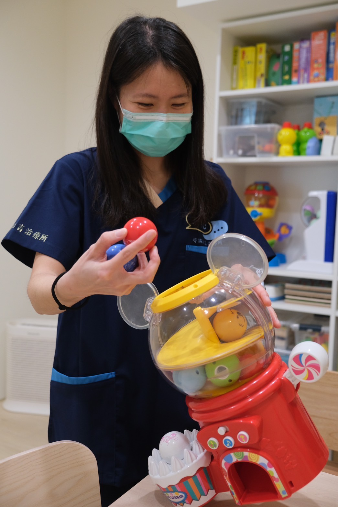
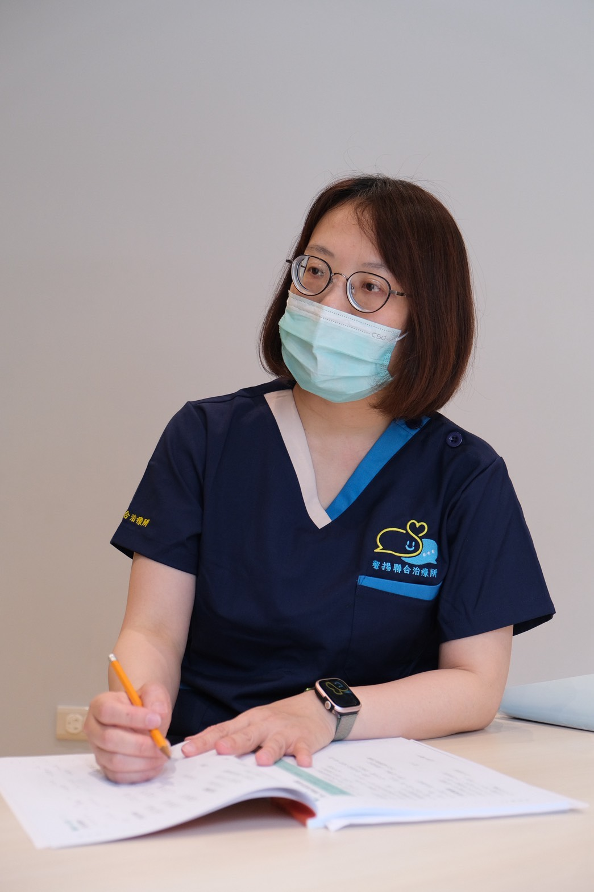
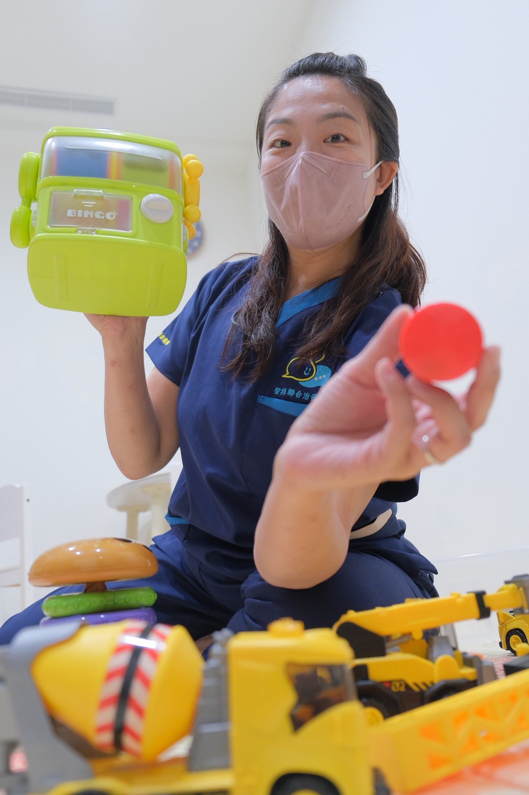
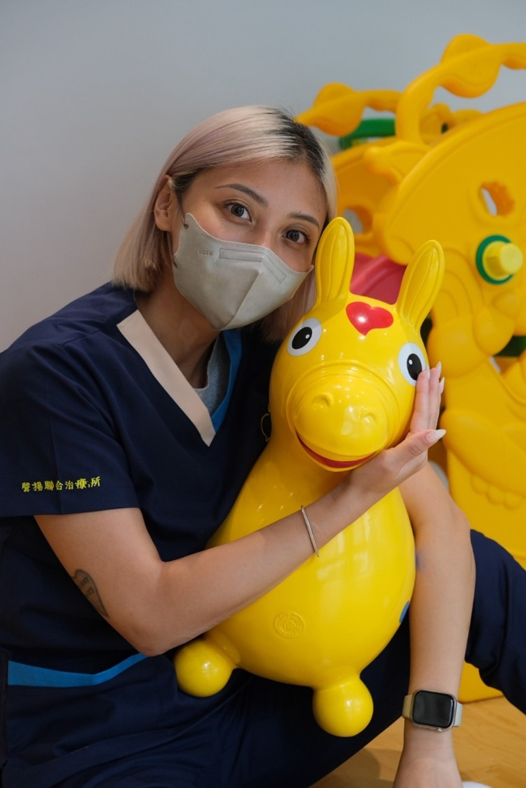

劉燕
職能治療師
學歷
- 長庚大學職能治療系
工作經歷
- 衛生福利部桃園醫院 職能治療師
- 東元綜合醫院 職能治療師
- 臺大醫院新竹分院 職能治療師
- 國健署早療聯評計畫 職能治療師
- 教學醫院實習學生教學訓練 臨床教師
竹南的家長過來也方便，苗栗頭份聲揚聯合治療所專注在職能治療。
聲揚聯合治療所的治療中心，就在苗栗頭份這邊。交通還蠻方便的，竹南的家長過來也不算遠。那麼孩子需要職能治療的徵兆有哪些呢？哪些情況下會建議進行職能治療？
以下為常見的提醒訊號，僅供參考、不能作為診斷。
像是學會穿衣服的速度比同齡孩子慢，或是不太願意自己動手。
例如抓筆時手抖、畫畫時線條歪斜，甚至用餐時拿湯匙會撒得到處都是。
有些孩子在團體中顯得格格不入，難以和同儕自然互動。
上課時常發呆、寫作業拖拖拉拉，容易分心。
遇到小挫折就容易哭鬧或生氣，難以平靜下來。
如果這些狀況持續存在，開始影響到孩子的學習狀況，或者是和其他小朋友的相處，那就可以考慮帶孩子去職能治療中心做個評估。聲揚聯合治療所就是一個不錯的選擇，我們就在苗栗，頭份、竹南的家長要過來都很方便！
每個項目都從評估開始，依孩子的狀況設定目標，並和家長討論在家可以怎麼延伸練習。
對聲音、觸覺特別敏感或遲鈍、動作笨拙易跌倒的孩子，在遊戲中整合感官與動作。
軀幹大肢體、精細操作能力與協調性的練習，打好學習與生活的基礎。
注意力、記憶力與問題解決能力的訓練，逐步拉長專注時間、建立成就感。
吃飯、穿衣、如廁等自理能力的練習，讓孩子在家與學校都能更獨立。
透過遊戲練習輪流、等待與合作，提升團體中的互動品質。
挫折忍受度較低、容易失控的孩子，練習辨識情緒與使用合適的策略。



